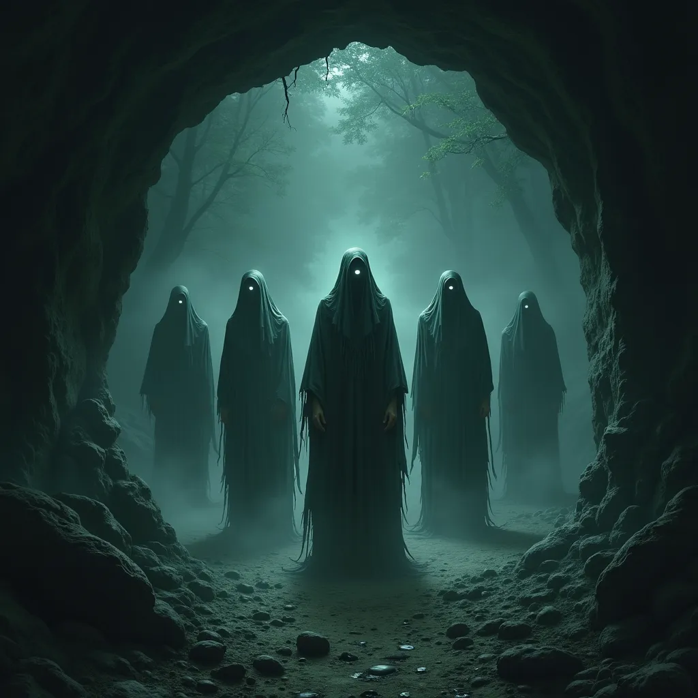

Vydáváš se přímo k jeskyni, která je podle legend domovem Srdce stínů. Před jeskyní potkáš skupinu strážců – vypadají jako ztracené duše lesa, něco mezi člověkem a zjevením. Jejich přítomnost budí respekt a tajemství. Nikoho ale nepustí dovnitř.